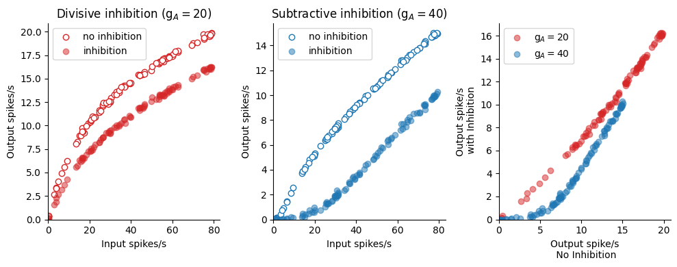

ゲイン調節と四則演算
Contents
ゲイン調節と四則演算¶
[Goldwyn et al., 2018]を実装．神経演算 (neuronal arithmetic; [Angus Silver, 2010])のモデル．
using Base: @kwdef
using Parameters: @unpack # or using UnPack
using PyPlot, ProgressMeter, Distributions
rc("axes.spines", top=false, right=false)
@kwdef struct HHIAParameter{FT}
Cm::FT = 1 # 膜容量(uF/cm^2)
gNa::FT = 37; gK::FT = 45; gA::FT = 20; gL::FT = 1 # Na, K, Kₐ, leakの最大コンダクタンス(mS/cm^2)
ENa::FT = 55; EK::FT = -80; EL::FT = -70 #Na, K, leakの平衡電位(mV)
gExc::FT = 0.5; gInh::FT = 1
VExc::FT = 0; VInh::FT = -85
βExc::FT = 0.2; βInh::FT = 0.18
tr::FT = 0.5; td::FT = 8 # ms
γ1::FT = 1/td; γ2::FT = 1/tr - 1/td
v0::FT = -20 # mV
end
@kwdef mutable struct HHIA{FT}
param::HHIAParameter = HHIAParameter{FT}()
N::Int
v::Vector{FT} = fill(-70, N); r::Vector{FT} = zeros(N)
n::Vector{FT} = fill(1/(1 + exp(-(-70 + 32)/8)), N)
a::Vector{FT} = fill(1/(1 + exp(-(-70 + 50)/20)), N)
b::Vector{FT} = fill(1/(1 + exp((-70 + 70)/6)), N)
sExc::Vector{FT} = zeros(N); sInh::Vector{FT} = zeros(N)
end
function update!(variable::HHIA, param::HHIAParameter, spikesExc::Vector, spikesInh::Vector, dt)
@unpack N, v, n, a, b, r, sExc, sInh = variable
@unpack Cm, gNa, gK, gL, gA, ENa, EK, EL, gExc, gInh, VExc, VInh, βExc, βInh, γ1, γ2, v0 = param
@inbounds for i = 1:N
m, h = 1 / (1 + exp(-(v[i]+30)/15)), 1 - n[i]
n[i] += dt * 0.75(1/(1 + exp(-0.125(v[i] + 32))) - n[i]) / (1 + 100 / (1 + exp((v[i] + 80)/26)))
a[i] += dt * 0.5(1/(1 + exp(-0.05(v[i] + 50))) - a[i])
b[i] += dt * (1.0/(1 + exp((v[i] + 70)/6)) - b[i]) / 150
sExc[i] += -sExc[i] * βExc*dt + spikesExc[i]
sInh[i] += -sInh[i] * βInh*dt + spikesInh[i]
IExc = gExc * sExc[i] * (v[i] - VExc)
IInh = gInh * sInh[i] * (v[i] - VInh)
IL = gL * (v[i] - EL)
IK = gK * n[i]^4 * (v[i] - EK)
IA = gA * a[i]^3 * b[i] * (v[i] - EK)
INa = gNa * m^3 * h * (v[i] - ENa)
v[i] += dt/Cm * -(IL + IK + IA + INa + IExc + IInh)
r[i] += dt * (γ2 * (1.0 - r[i])/(1.0 + exp(-v[i] + v0)) - r[i] * γ1)
end
end
update! (generic function with 1 method)
function GammaSpike(T, dt, n_neurons, fr, k)
nt = Int(T/dt) # number of timesteps
θ = 1/(k*(fr*dt*1e-3)) # fr = 1/(k*θ)
isi = rand(Gamma(k, θ), Int(round(nt*1.5/fr)), n_neurons)
spike_time = cumsum(isi, dims=1) # ISIを累積
spike_time[spike_time .> nt - 1] .= 1 # ntを超える場合を1に
spike_time = round.(Int, spike_time) # float to int
spikes = zeros(Bool, nt, n_neurons) # スパイク記録変数
for i=1:n_neurons
spikes[spike_time[:, i], i] .= 1
end
spikes[1] = 0 # (spike_time=1)の発火を削除
return spikes
end
GammaSpike (generic function with 1 method)
function FIcurve(neurons, spikesExc, spikesInh, T=5000, dt=0.01)
nt = Int(T/dt) # number of timesteps
varr = zeros(Float32, nt, neurons.N)
@showprogress for t = 1:nt
update!(neurons, neurons.param, spikesExc[t, :], spikesInh[t, :], dt)
varr[t, :] = neurons.v
end
spike = (varr[1:nt-1, :] .< 0) .& (varr[2:nt, :] .> 0)
output_spikes = sum(spike, dims=1) / T*1e3
input_spikes = sum(spikesExc, dims=1) / T*1e3
return input_spikes, output_spikes
end
FIcurve (generic function with 3 methods)
T, dt = 50000, 5e-2 # ms
nt = Int(T/dt)
N = 100
maxfrExc = 80; frInh = [0, 50];
function HHIAFIcurve_multi(gA, T, dt, N, maxfrExc, frInh)
nInh = size(frInh)[1]
input_spikes_arr, output_spikes_arr = zeros(nInh, N), zeros(nInh, N)
nt = Int(T/dt) # number of timesteps
frExc = rand(N) * maxfrExc
spikesExc = zeros(Int, nt, N)
for j = 1:N
spikesExc[:, j] = rand(nt) .< frExc[j]*dt*1e-3
end
for i=1:nInh
spikesInh = (frInh[i] == 0) ? zeros(Int, nt, N) : GammaSpike(T, dt, N, frInh[i], 12)
neurons = HHIA{Float32}(N=N, param=HHIAParameter{Float32}(gA=gA)) # modelの定義
input_spikes_arr[i, :], output_spikes_arr[i, :] = FIcurve(neurons, spikesExc, spikesInh, T, dt)
end
return input_spikes_arr, output_spikes_arr
end
HHIAFIcurve_multi (generic function with 1 method)
input_spikes1, output_spikes1 = HHIAFIcurve_multi(20, T, dt, N, maxfrExc, frInh);
input_spikes2, output_spikes2 = HHIAFIcurve_multi(40, T, dt, N, maxfrExc, frInh);
figure(figsize=(10, 4))
subplot(1,3,1); title(L"Divisive inhibition (g$_A=20$)")
scatter(input_spikes1[1, :], output_spikes1[1, :], facecolor="white", edgecolors="tab:red", label="no inhibition")
scatter(input_spikes1[2, :], output_spikes1[2, :], alpha=0.5, color="tab:red", label="inhibition")
xlim(0, ); ylim(0, ); xlabel("Input spikes/s"); ylabel("Output spikes/s"); legend()
subplot(1,3,2); title(L"Subtractive inhibition (g$_A=40$)")
scatter(input_spikes2[1, :], output_spikes2[1, :], facecolor="white", edgecolors="tab:blue", label="no inhibition")
scatter(input_spikes2[2, :], output_spikes2[2, :], alpha=0.5, color="tab:blue", label="inhibition")
xlim(0, ); ylim(0, ); xlabel("Input spikes/s"); ylabel("Output spikes/s"); legend()
subplot(1,3,3);
scatter(output_spikes1[1, :], output_spikes1[2, :], alpha=0.5, color="tab:red", label=L"g$_A=20$")
scatter(output_spikes2[1, :], output_spikes2[2, :], alpha=0.5, color="tab:blue", label=L"g$_A=40$")
xlim(0, ); ylim(0, ); xlabel("Output spike/s\n No Inhibition"); ylabel("Output spike/s\n with Inhibition"); legend()
tight_layout()

┌ Warning: `vendor()` is deprecated, use `BLAS.get_config()` and inspect the output instead
│ caller = npyinitialize() at numpy.jl:67
└ @ PyCall C:\Users\yamtak\.julia\packages\PyCall\3fwVL\src\numpy.jl:67
参考文献¶
- AS10
R Angus Silver. Neuronal arithmetic. Nat. Rev. Neurosci., 11(7):474–489, June 2010.
- GSTT18
Joshua H Goldwyn, Bradley R Slabe, Joseph B Travers, and David Terman. Gain control with a-type potassium current: IA as a switch between divisive and subtractive inhibition. PLoS Comput. Biol., 14(7):e1006292, July 2018.